4/25/25 - Castle Rock
Promptly at 4pm Thursday I logged off work and sped down the one mile or so of dirt road to the parking area for Castle Rock. Actually there wasn't a parking area but just a one car vehicle track going off the road. There was no trail up to the top though there was a faint footprint or two at times. The hike started by crossing a creek, walking a few hundred feet in a sandy wash, then ascending several hundred feet on a very steep slope with loose sand and rocks. Each step up caused sand and rocks to fall away and I stumbled a few times. After leveling out there were some nice views back towards the car and Cockscomb rock formation, a geologic marvel named after the ridge’s resemblance to the colorful “comb” on a rooster’s head. The formation is a monocline uplift formed in the Jurassic and Cretaceous periods about 60? million years ago and runs through this part of the state down through a bit of Arizona. After there was a bit of downhill before the slickrock climb to the peak. The route up was steep but fun and not challenging. Towards the top the slickrock bowl I had been hiking up gave way to crags and assorted sharply edged vertical rock formations. The views east over the Cockscomb and west past Hackberry Canyon were really nice.
Campsite for two nights
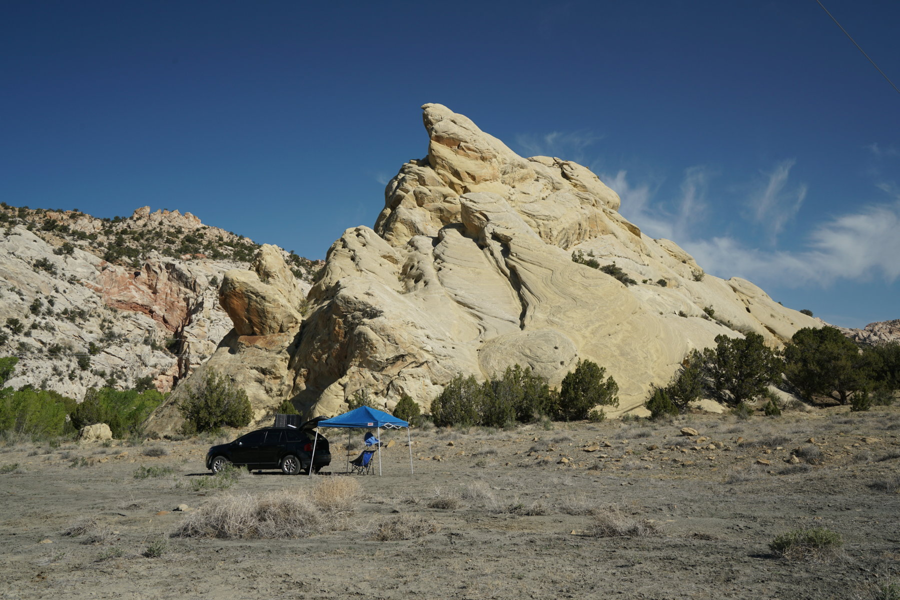
Castle Rock peak in the distance above the boulders in the foreground
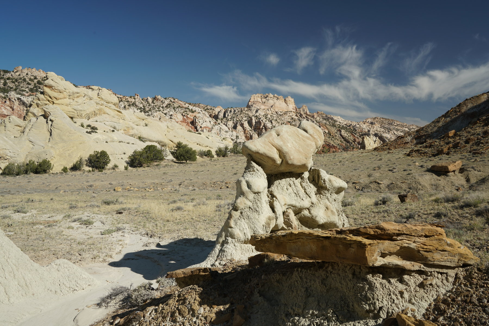
Start of hike through a wash. The ascent was just past the two cottonwoods in the center, then up and to the left
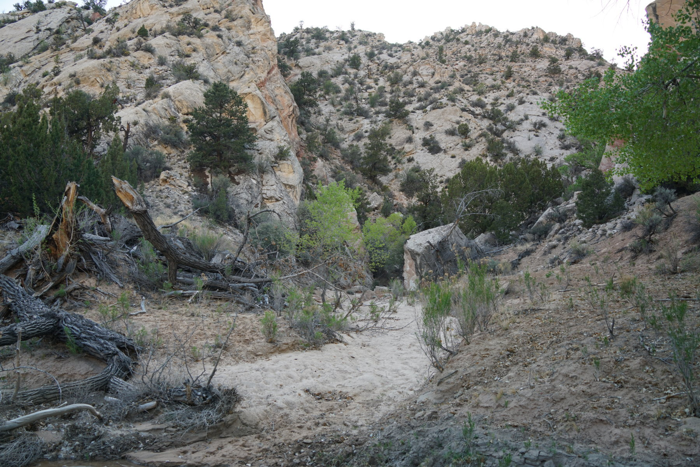
Looking back after starting
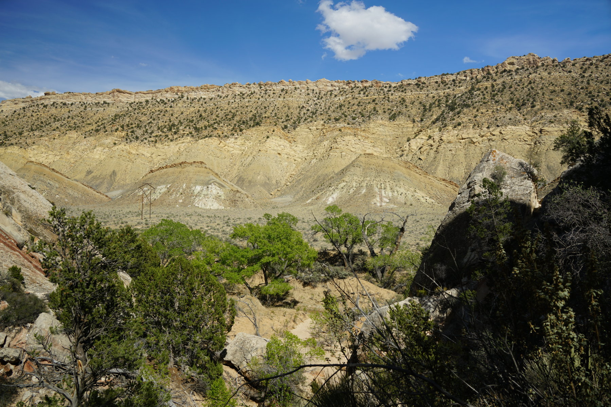
View back down the way I came with my car in the distance
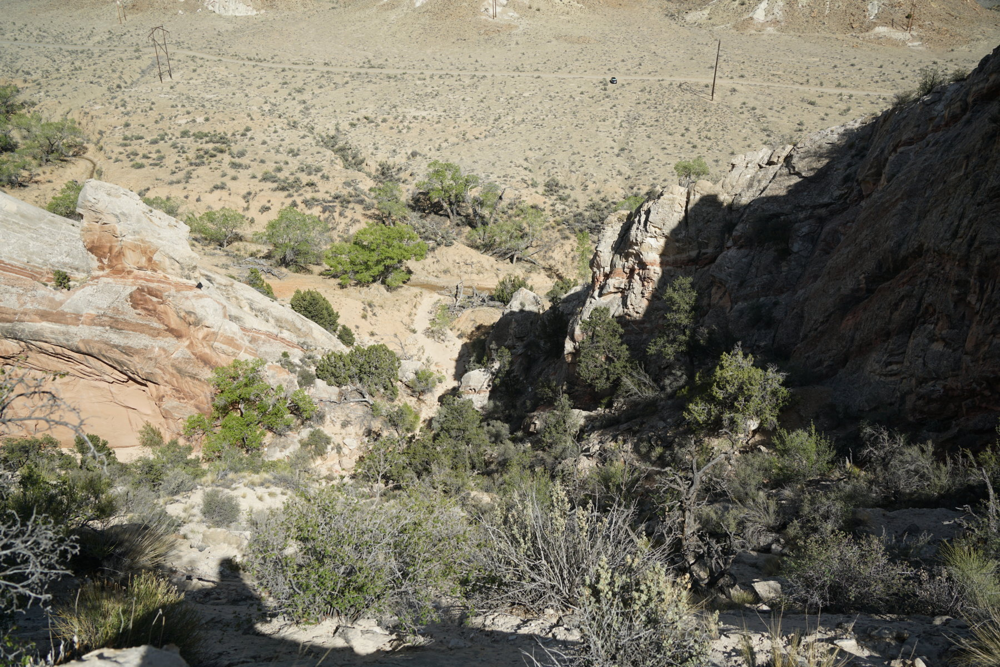
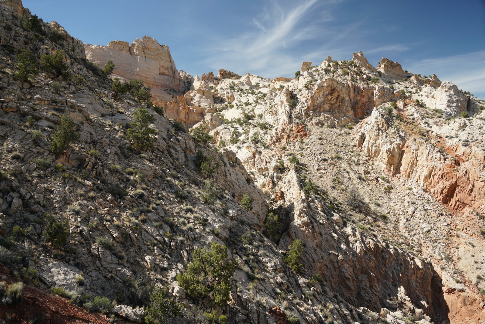
Castle Rock, the route went down over a short hill then climbed up along the left side of the mountain. A hundred feet or so from the top there was a bowl and from there I cut to the right and reached the top.
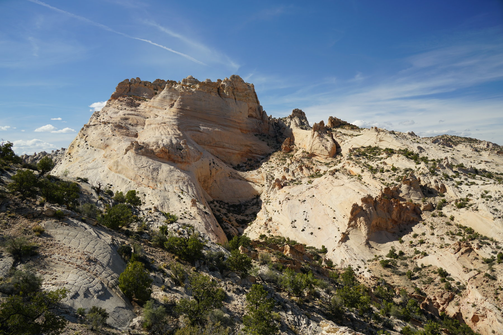
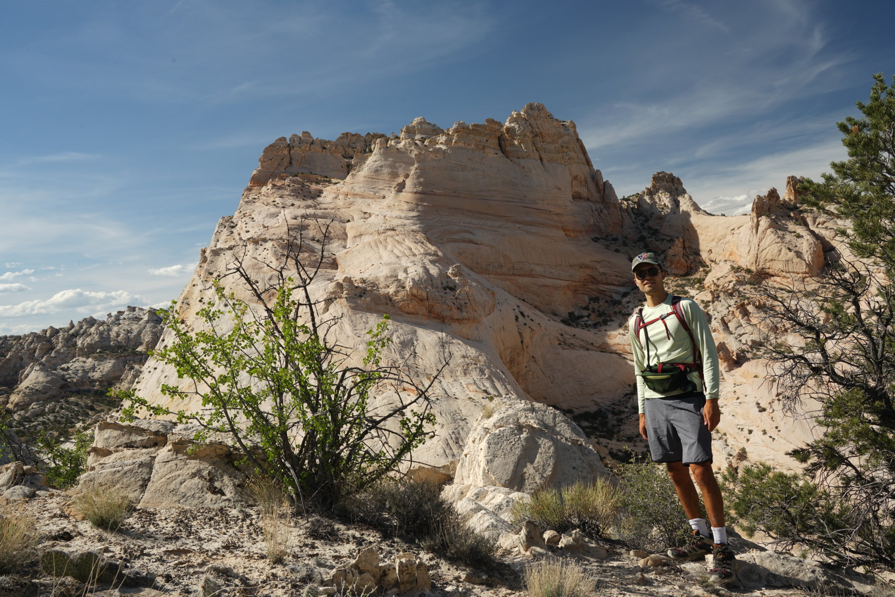
Start of ascent up, from the wash in the shade on the left
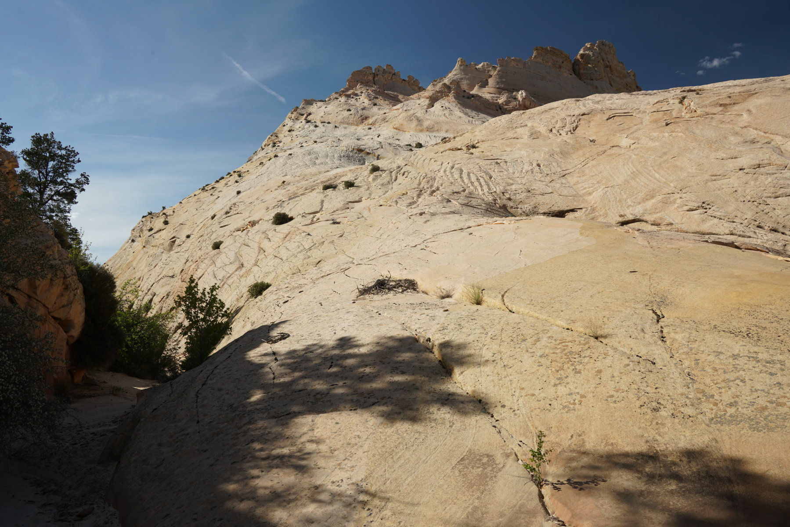
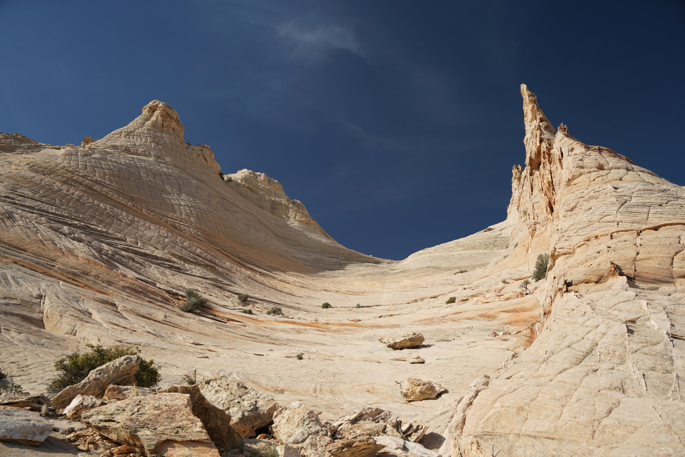
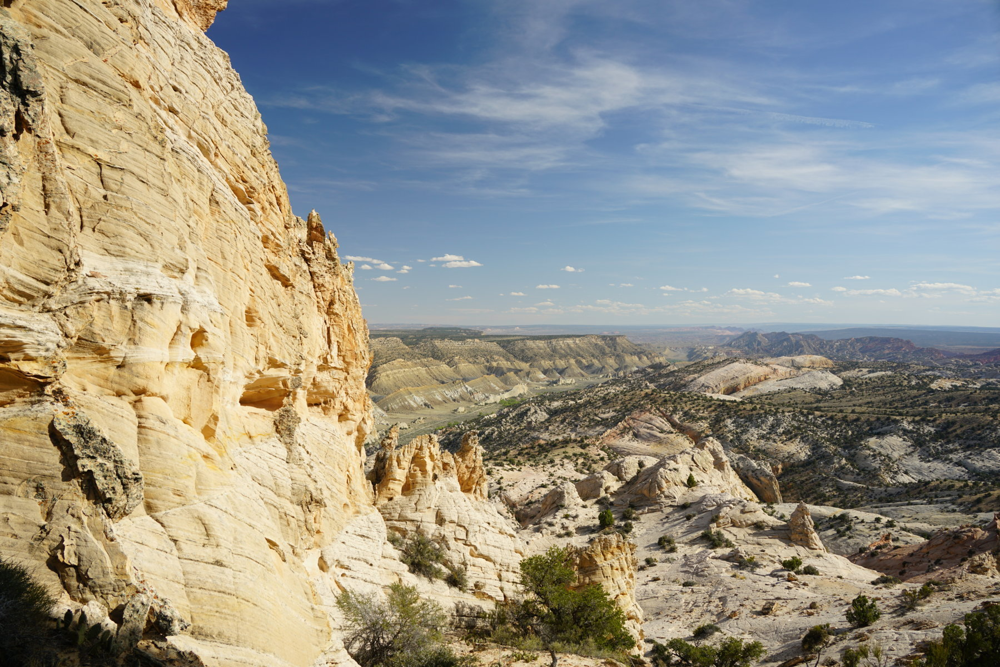
View south over the Cockscomb and Cottonwood Canyon
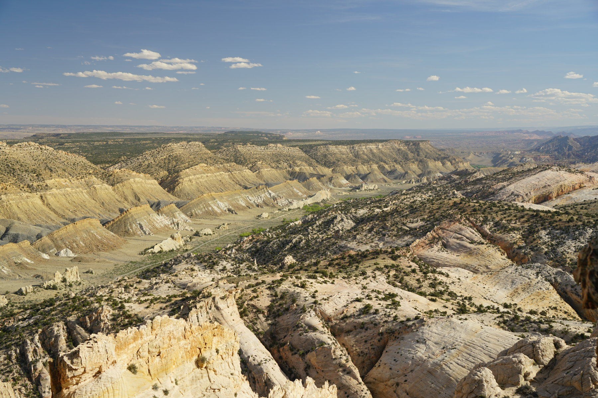
View north
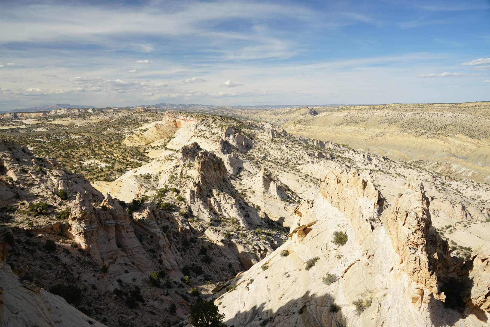
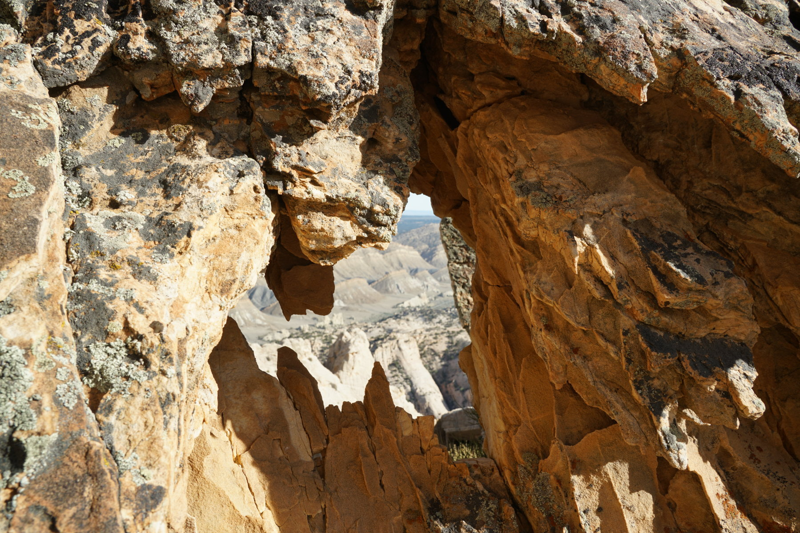
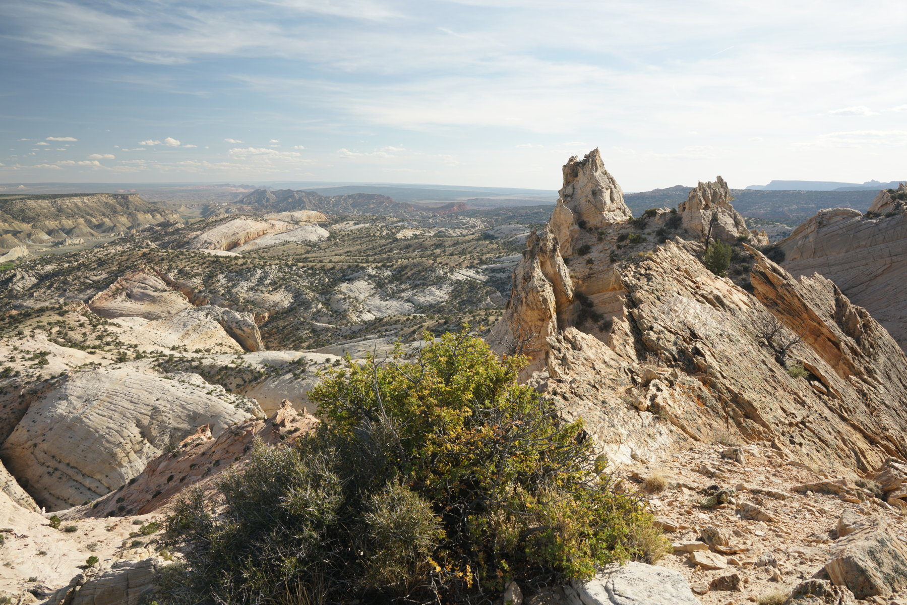